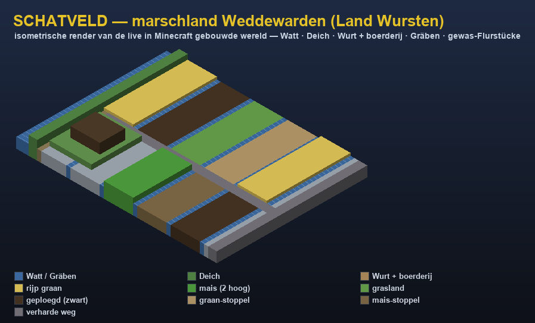
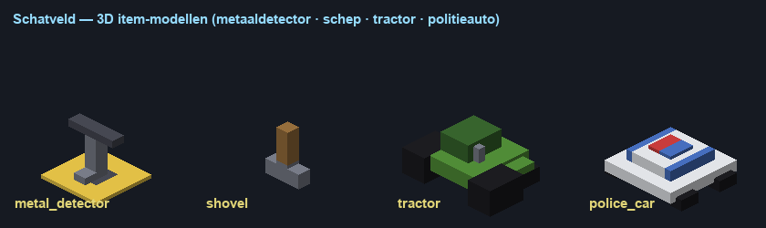

Treasure-hunting on the real marshland of Weddewarden · Land Wursten · Minecraft 1.21.10

The marsh you'll explore — Deich (dyke), Wurt with farmhouse, Gräben (ditches), crop fields & roads.
Singleplayer · offline · no serverThis is the quickest way to play. Everything runs from the datapack — no Python, no server.
▶ Quick start (singleplayer)
Open the Modrinth App → profile chemlab → Play.
Singleplayer → open the world chemfield → Play.
On join you're automatically given a Metal Detector + Shovel, and the marsh
builds itself around you (you'll be placed on it). No commands needed.
Hold the Metal Detector and right-click the ground → a number 0–100 appears (metal reading).
Dig the ground (dirt / grass / clay / farmland …) → you find something. Below 10 = always rusty iron; higher = coins, amber, a fibula, a Wurt artefact…
Language: switch anytime in Options → Language — English (default), Deutsch, Français, Русский, Español, Português (BR), 简体中文, 日本語, Nederlands. The whole game follows.
🧰 Your tools

Metal Detector & Shovel are 2D item icons · the Tractor & Police Car are 3D models.
🎭 The three roles
Archaeologist — the default detect-and-dig loop. Right-click ground to read 0–100, dig for finds.
Significant finds fall under the Schatzregal (state property → finder's fee). Digging without a permit is Raubgrabung.
Farmer — gets a Tractor. Right-click the ground with it to drive; sneak to park, right-click it to drive again. The tractor can drive anywhere, fields included.
Police — gets a Police Car. Same driving, but it must stay on the roads (gravel) — drive onto a field and you're ejected. Interactions only work within 5 blocks.
To switch role (you're op/creative, so commands work): run /function schatveld:menu and click a role.
⚠️ If something looks wrong
No detector, or no marsh? That happens only if you joined this world before the latest fix.
Fix it once (you have cheats/op): press T and run
/function schatveld:build_marsh (builds the marsh where you stand) and
/function schatveld:shop/give_detector (gives the detector).
It crashed before? That was Physics Mod conflicting with Entity Model Features on entity death —
it's now disabled in chemlab, so it won't crash again.
🖥️ The full version (optional)
Server + brain
Standalone gives you detecting, digging, finds and the vehicles. The economy (€ payouts, Schatzregal
finder-fee, the Landesmuseum collection, reputation ranks, farming & policing scoring) runs in a small
Python "brain". To use it: in a terminal run bash pybrain/play.sh, then in chemlab connect via
Multiplayer → Direct Connection → localhost. Stop it with bash pybrain/stop.sh.